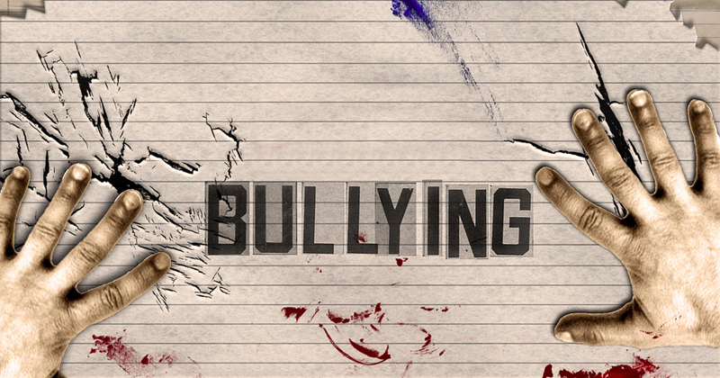

Bullying
Bullying
bullying é uma violência repetitiva e intencional contra alguém. Geralmente, o agressor é uma pessoa ou um grupo que tem mais poder sobre a vítima, seja por força física, popularidade ou por estar em maior número.
Essa agressão pode acontecer de várias formas:
Verbal: xingamentos, apelidos ofensivos, piadas humilhantes.
Física: bater, empurrar, chutar, roubar ou danificar pertences.
Psicológica/Moral: espalhar fofocas, excluir a pessoa de grupos, ameaçar, intimidar ou fazer chantagem.
Sexual: assédio, comentários sexuais ou abusos.
Cyberbullying: quando a violência acontece no ambiente digital, como em redes sociais e aplicativos de mensagem.
O bullying não é uma "brincadeira" ou algo passageiro. Ele causa sérios danos emocionais, psicológicos e, às vezes, físicos, que podem afetar a vítima por toda a vida.
"Seja a voz que ecoa a gentileza, não o eco que amplifica a dor. Sua força está em erguer os outros, não em derrubá-los."